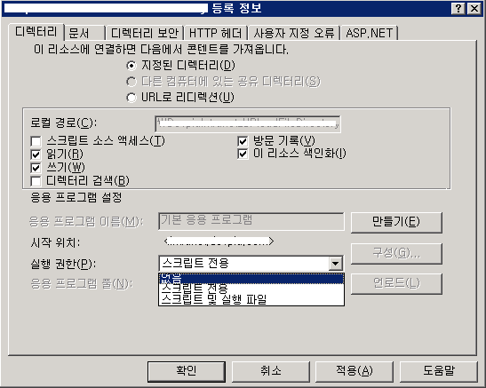
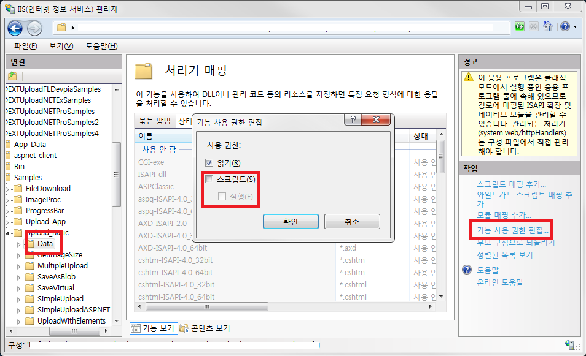

파일 업로드 보안 개발 가이드
파일 업로드 기능을 제공하는 서비스는 외부에서 보안에 영향을 미칠 수 있는 공격을 당할 수 있습니다. 예를 들어 공격자가 악성 파일을 업로드하여 서버에 저장된 웹쉘(Web-Shell)을 실행할 수 있습니다. 대부분의 서비스에는 파일 첨부 기능을 포함하고 있는데, 업로드할 파일에 대한 유효성을 검증하는 보안 코드가 존재하지 않는다면 이를 악용하여 서버의 권한을 취득한다거나, 서비스에 유해를 가하는 행위를 시도할 수 있습니다.
ASP, ASP.NET, PHP, JSP(Servlet) 등등 모든 플랫폼은 기본적으로 업로드된 파일에 대한 검증 차원의 방어가 되어 있지 않습니다. 그러므로 서비스를 제공하는 개발자는 클라이언트(브라우저, third-party)로부터 전송된 파일 데이터를 검증하는 작업 코드를 작성해야만 합니다.
- 클라이언트 영역에서 파일 확장자 필터링
-
파일 첨부 기능에서 업로드가 허용된 파일만 선택이 가능하도록 필터링을 해야 합니다.
파일 첨부 대상은 서비스 성격에 따라 달라지지만, 일반적인 경우에는 흔히 사용하는 미디어 파일을 제외하고는 업로드를 허용해서는 안됩니다. (doc, docx, xls, xlsx, hwp, …, jpg, png 등등 허용)
그러므로 미디어 파일을 제외한 JSP, ASP, PHP, CGI과 같은 파일들이 업로드 금지 대상이 됩니다.
순수 HTML을 사용한 경우 JavaScript 코드를 사용하여 파일의 확장자명을 검사할 수 있고, ActiveX와 같은 Plug-in 기술을 사용한 컴포넌트를 사용하는 경우에는 컴포넌트 자체 확장자 필터링 기능을 사용하도록 합니다.
파일 확장자를 검증하는 코드는 업로드가 금지된 파일 확장자를 검사하는 방식[Black List]보다는 업로드가 가능한 파일 확장자인지 검사하는 방식[White List]을 사용해야 합니다.
클라이언트 측에서 올바른 검증을 거쳤다 하더라도 서버로 전송되는 과정에서 데이터 변조가 일어날 경우가 있습니다. HTTP 프로토콜에서는 이를 방어할 방법은 없기 때문에 SSL(Secure Socket Layer)을 사용하여 암호화 전송을 해야 합니다.
SSL은 전송계층(Transport Layer)단에서 암호화를 수행하기 때문에, 개발자 입장에서는 따로 처리할 부분은 없습니다. 그러나 SSL은 암호화/복호화 처리 과정이 있기 때문에 적용된 서비스가 전반적으로 성능(체감 응답 속도)이 떨어질 수 있습니다.
- 서비스(서버) 영역에서 파일 확장자 필터링
-
클라이언트 측에서 검증이 이루어졌다고 하더라도 쉽게 우회가 가능하기 때문에 서버 측 코드에서도 반드시 동일한 검사를 수행해야만 합니다.
클라이언트 검사 방법과 마찬가지로 White List 기반으로 확장자 검사를 수행해야 하며, 클라이언트 측에서 전달된 파일명을 전처리 하지 않고 그대로 검사하는 것이 좋습니다.
예를 들어 trim(공백으로 처리되는 문자셋 제거)처리를 하거나, 특수 문자를 모두 제거하는 작업을 배제하고 순수 파일명 그대로 검사를 수행해야 하며, 애초에 White List에 포함되지 않은 확장자를 갖는 파일인 경우에는 서버에 저장하지 않도록 해야 합니다.
Black List 방식으로 확장자 필터링을 하는 경우에는 공격자가 반복 작업을 통하여 Black List에 포함되지 않은 패턴을 찾아 공격할 수 있기 때문에 반드시 White List 검증 방식을 사용하도록 합니다.
- 업로드 디렉터리 실행 권한 제거
-
특수 목적이 있지 않는 한, 일반적으로 업로드가 된 파일은 다운로드를 하기 위한 대상이 됩니다.
웹쉘 파일이 저장이 되었다 하더라도 이 파일이 실행되지 않는다면, 보안에 심각한 영향을 미치지 않습니다.
그러므로 파일을 저장하는 디렉터리는 반드시 실행 권한을 제거해야 합니다.
예) IIS 보안 설정
IIS 설정에서 대상 디렉터리를 선택한 후, 속성 창을 열고 실행 권한을 '없음'으로 설정합니다.

예) IIS7 이상인 경우
IIS7 이상인 경우에는 업로드 디렉터리를 선택한 후, 처리기 매핑 도구를 열고 권한을 변경해야 합니다.
기능 사용 권한 편집 항목에서 스크립트, 실행 항목을 체크 해지합니다.

예) Apache의 경우
Apache의 경우에는 권한 제거의 방법이라기 보다는 업로드 디렉터리에 저장할 수 있는 파일의 대상을 제한하는 방법을 사용할 수 있습니다.
#httpd.conf 설정 파일 <Directory 업로드디렉터리경로> AllowOverride FileInfo (혹은 All도 가능) </Directory>
업로드디렉터리 하위에 .htaccess 파일을 생성하고 특정 MIME-TYPE을 파일들을 변경하여 웹쉘 파일들이 실행되지 않도록 해야 합니다.
<FilesMatch "\.(php|pl|cgi|inc|lib)"> Order allow, deny Deny from all </FilesMatch> AddType text/html .html .htm .php .php3 .php4. phtml .phps .in .cgi .pi .shtml .jsp
기타 자세한 사항은 Apache .htaccess 파일 설정을 참고하세요.
http://httpd.apache.org/docs/2.4/mod/core.html#allowoverride
http://httpd.apache.org/docs/2.4/howto/htaccess.html
기타 다른 웹 서버 혹은 WAS 서버 설정은 관련 문서를 참고하도록 합니다.
- 업로드 디렉터리 경로 외부 노출 제거
-
개발 편의를 위해 일반적으로 파일 업로드 디렉터리 위치를 웹 주소로 노출시키는 경우가 많습니다.
파일을 업로드하는 과정은 신경써서 개발을 하지만, 다운로드 부분은 추가 처리 없이 웹 서버에 일임하는 경우가 많기 때문에 업로드된 웹쉘을 실행하기 위한 표적이 됩니다.
그러므로 파일 업로드 디렉터리 경로는 서비스의 하위 디렉터리 경로로 설정하는 것을 1차적으로 피하며, 외부 디렉터리를 사용하더라도 웹 주소 접근을 막기 위해서 웹 가상디렉터리로 등록하지 않도록 합니다.
대신 다운로드를 하기 위해서 다운로드 모듈을 개발하고 그 모듈에서 외부 디렉터리로부터 파일을 읽어 전송하는 기능을 개발해야 합니다.
- 파일 관리 정책 변경
-
로컬 드라이브에 저장된 파일명 그대로 서버에 저장하려는 경우가 많습니다. 업무상 관리의 편의성 때문에 파일명 그대로 저장을 하도록 정책을 결정하는 경우가 많지만, 이런 경우 중복 파일명을 피하기 위한 추가 코드 작성뿐만 아니라, 웹쉘 공격을 하기 위한 1차적인 조건이 되기 때문입니다.
업로드 대상이 되는 파일은 파일 고유의 파일명을 사용하지 않고 서비스 정책에 맞도록 특수한 파일명으로 생성하여 저장을 하도록 합니다.
예)
F[파일업로드시각yyyyMMddHHmmssfff]_[원격아이피]_[세션및고유아이디]_[스레드]_[순번].[무의미한 확장자]
사이트를공격하자.jsp -> F20130401153027125_111.111.111.111_0012345_100_0001.bin
그리고 실제 로컬 파일명은 다운로드 서비스를 위해서 데이터베이스에 등록합니다.
이때 파일의 크기, 확장자, MIME-TYPE(가능하면) 등을 함께 등록하면 추가로 보안 및 서비스 구현에 도움을 주게 됩니다.
더불어 다운로드는 반드시 다운로드 모듈을 사용하여 다운로드할도록 구현을 하면, 사용자의 입장에서도 데이터베이스에 등록된 사용자 친화적인 파일명으로 다운로드를 받을 수 있습니다.
결론적으로 공격자는 웹쉘을 실행할 파일명을 알 수 없기 때문에 공격을 시도할 수 없습니다. 파일명을 알고 있다하더라도 다운로드 모듈을 통하여 파일에 접근할 수 밖에 없으므로, 서버는 해당 파일을 실행하지 못하고 클라이언트로 무조건 다운로드가 됩니다. 그렇기 때문에 웹쉘 공격을 근본적으로 막을 수 있습니다.
- DEXTUploadX5
-
DEXTUploadX5는 파일 업로드 공격을 막는 자체 보안 기능을 가지고 있지 않습니다.
또한 여러 해킹 도구에 의해서 변조되거나 공격을 받는 것을 제품 차원에서 방어하거나 조치를 취할 수 없음을 유념하시길 바랍니다.